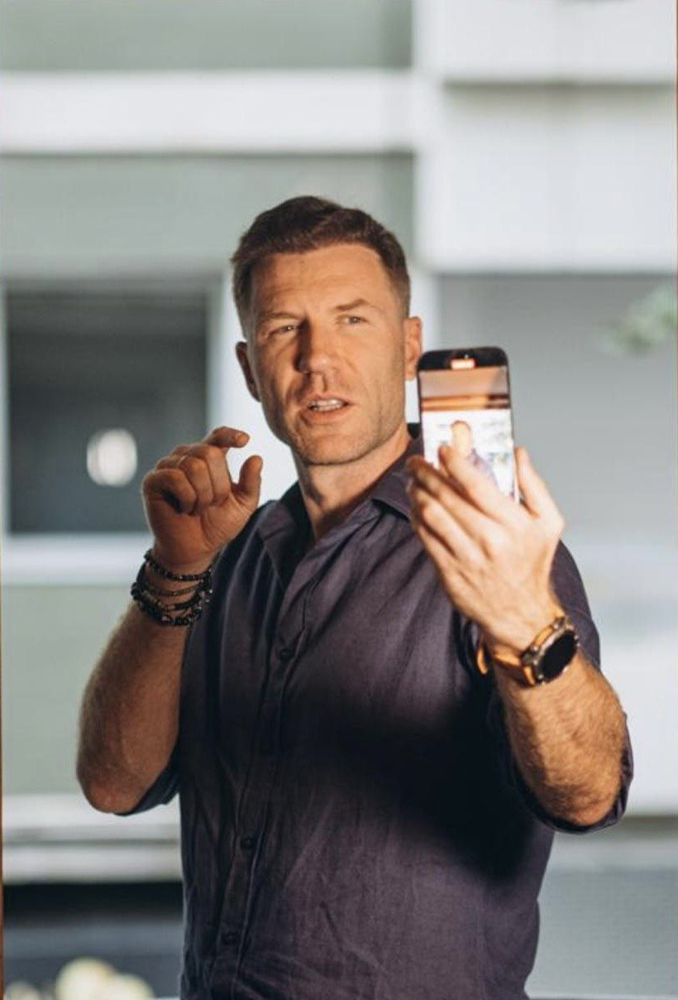

Підприємець · Засновник DriveMe Group · Вінниця
«Я будував цей бізнес не з інвесторських грошей, а з власного досвіду та помилок. Кожен напрямок — відповідь на реальну проблему ринку.»

DriveMe — це не стартап на венчурні гроші. Це бізнес, побудований крок за кроком, з власним капіталом і розумінням ринку зсередини.
Роман запустив перший невеликий автопарк у Вінниці — кілька автомобілів для роботи на Uklon. Не як франшиза, не як партнерство — власний бізнес з нуля. Головне розуміння: ринок таксі потребує системного підходу, а не просто авто.
Автопарк виріс до десятків авто. Відкрита перша філія за межами Вінниці. З'явилося розуміння: щоб рости, треба будувати систему — не просто орендувати авто, а керувати людьми, процесами і фінансами.
Зрозумівши, що одна з головних статей витрат — ремонт авто, Роман запустив власний автосервіс. Це знизило витрати і дало контроль над якістю. Так з'явилася ідея вертикально інтегрованої автогрупи.
Повномасштабне вторгнення. Більшість автобізнесів скорочувалися або закривалися. DriveMe продовжив роботу — перегрупував ресурси, підтримав команду і водіїв. Цей рік показав: культура та системність важливіші за сприятливий ринок.
Додані нові напрямки: підбір та імпорт авто з Європи, страхові продукти. Кожен напрямок — відповідь на реальний запит клієнтів і ринку. Група компаній набуває повного циклу: від купівлі авто до його утилізації.
Сьогодні DriveMe — повноцінна автомобільна група компаній з присутністю у 7 містах України. Понад 100 людей в команді. Понад 344 авто в управлінні. Продовжуємо будувати — більше міст, більше напрямків, більше людей.
DriveMe — це не кінцева точка, це платформа. Роман бачить групу компаній, яка повністю охоплює життєвий цикл автомобіля: від підбору та купівлі за кордоном — до щоденної експлуатації, обслуговування і продажу.
Мета — бути присутніми в кожному великому місті України та стати стандартом якості в автомобільному бізнесі для таксі-операторів і власників авто.
Роман відкритий до партнерства, інвестицій та цікавих проектів у сфері автомобільного бізнесу.